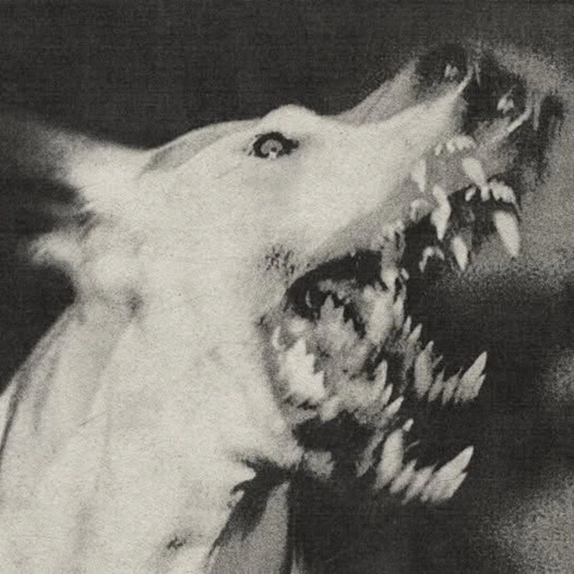

Let the room know you shipped!
A producer tag on every git commit and git push. Install it once and it works in every repo.
brew trust opdhaker/tap
brew install OPDhaker/tap/jingle
jingle install --yesmacOS and Linux • Free and open source (MIT)